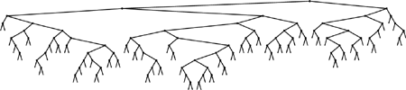
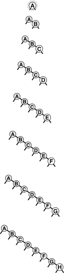
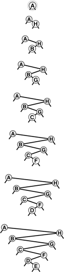

Property 12.7. Insertions and search misses require about 2ln N |
 1:39 lg
1:39 lg|
A search for a random key in a tree of N nodes is equally likely to end at any of the N + 1 external nodes on a search miss. This property, coupled with the fact that the difference between the external path length and the internal path length in any tree is merely 2N (see Property 5.7), establishes the stated result. In any BST, the average number of comparisons for an insertion or a search miss is about 1 greater than the average number of comparisons for a search hit. |
Property 12.6 says that we should expect the search cost for BSTs to be about 39% higher than that for binary search for random keys, but Property 12.7 says that the extra cost is well worthwhile, because a new key can be inserted at about the same cost—flexibility not available with binary search. Figure 12.8 shows a BST built from a long random permutation. Although it has some short paths and some long paths, we can characterize it as well balanced: Any search requires less than 12 comparisons, and the average number of comparisons for a random search hit is 7.00, as compared to 5.74 for binary search.
Figure 12.8. Example of a binary search tree
In this BST, which was built by inserting about 200 random keys into an initially empty tree, no search uses more than 12 comparisons. The average cost for a search hit is about 10.

Properties 12.6 and 12.7 are results on average-case performance that depend on the keys being randomly ordered. If the keys are not randomly ordered, the algorithm can perform badly.
Property 12.8. In the worst case, a search in a binary search tree with N keys can require N comparisons
|
Figures 12.9 and 12.10 depict two examples of worst-case BSTs. For these trees, binary-tree search is no better than sequential search using singly linked lists. |
Figure 12.9. A worst-case BST
If the keys arrive in increasing order at a BST, it degenerates to a form equivalent to a singly linked list, leading to quadratic tree-construction time and linear search time.

Figure 12.10. Another worst-case BST
Many other key insertion orders, such as this one, lead to degenerate BSTs. Still, a BST built from randomly ordered keys is likely to be well balanced.

Thus, good performance of the basic BST implementation of symbol tables is dependent on the keys being sufficiently similar to random keys that the tree is not likely to contain many long paths. Furthermore, this worst-case behavior is not unlikely in practice—it arises when we insert keys in order or in reverse order into an initially empty tree using the standard algorithm, a sequence of operations that we certainly might attempt without any explicit warnings to avoid doing so. In Chapter 13, we shall examine techniques for making this worst case extremely unlikely and for eliminating it entirely, making all trees look more like best-case trees, with all path lengths guaranteed to be logarithmic.
None of the other symbol-table implementations that we have discussed can be used for the task of inserting a huge number of random keys into a table, then searching for each of them—the running time of each of the methods that we discussed in Sections 12.2 through 12.4 goes quadratic for this task. Furthermore, the analysis tells us that the average distance to a node in a binary tree is proportional to the logarithm of the number of nodes in the tree, which gives us the flexibility to efficiently handle intermixed searches, insertions, and other symbol-table ADT operations, as we shall soon see.
Exercises
| |
| |
12.58 Give an insertion sequence for the keys EASY Q U E S T I O N into an initially empty BST such that the tree produced is equivalent to binary search, in the sense that the sequence of comparisons done in the search for any key in the BST is the same as the sequence of comparisons used by binary search for the same set of keys. | |
| |
12.60 Draw all the structurally different BSTs that can result when N keys are inserted into an initially empty tree, for 2 | |
| |
| |
| |
12.64 Run empirical studies to compute the average and standard deviation of the number of comparisons used for search hits and for search misses in a binary search tree built by inserting N random keys into an initially empty tree, for N = 103, 104, 105, and 106. | |
12.65 Write a program that builds t BSTs by inserting N random keys into an initially empty tree, and that computes the maximum tree height (the maximum number of comparisons involved in any search miss in any of the t trees), for N = 103, 104, 105, and 106 with t = 10, 100, and 1000. |


 |